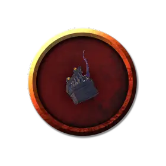

Молодой мимик
Juvenile Mimic
Крошечный Монстр (Перевёртыш), без мировоззрения

Класс Доспеха 11
Хиты 7 (2к4 + 2)
Скорость 10 футов, лазая 10 футов
| мод | спас | ||
|---|---|---|---|
| СИЛ | 1 | −5 | −5 |
| ЛОВ | 12 | +1 | +1 |
| ТЕЛ | 13 | +1 | +1 |
| мод | спас | ||
|---|---|---|---|
| ИНТ | 10 | +0 | +0 |
| МДР | 13 | +1 | +1 |
| ХАР | 10 | +0 | +0 |
Навыки Скрытность +3
Иммунитет к урону кислота
Иммунитет к состояниям сбивание с ног
Чувства тёмное зрение 60 футов, пассивное Восприятие 11
Языки Общий, Подземный, Телепатия 120 футов
Опасность 0
Бонус мастерства +2
Особенности
Обманчивая внешность (только в облике предмета). Пока мимик остается без движения, он неотличим от обычного предмета.
Паучье лазанье. Мимик может лазать по сложным поверхностям, включая потолки, без совершения проверок характеристик.
Действия
Укус. Рукопашная атака оружием: +3 к попаданию, досягаемость 5 футов, одна цель. Попадание: колющий урон 1 + урон кислотой 2 (1к4).
Перевёртыш. Мимик может превратиться в любой предмет, или принять свой истинный, бесформенный облик. Во всех обликах его характеристики не меняются. Всё несомое и носимое им снаряжение не превращается. Он принимает свой истинный облик, если умирает.
Описание
Колонии мимиков
Мимики подражают местности и подземельям, преображаясь, для охоты за пищей. Редкие экземпляры развивают более глубокое понимание мира и могут общаться с другими существами. В крайне редких случаях группы этих существ объединяются вместе, образуя колонии. Такие мимики сотрудничают, чтобы сформировать значительно большие объекты, чем те, в которые может превратиться любой одинокий мимик. Колонии мимиков благодаря совместному труду, способны создавать здания, мосты, кристаллические структуры, скалы, статуи и почти все, что пожелают. Целые деревни, появляющиеся из ниоткуда, могут состоять из мимиков!
Общение мимиков. Члены колонии развивают телепатию и способность говорить. Находясь в пределах 10 миль от колонии, любой мимик может телепатически общаться с другими существами в пределах 120 футов от него, и может свободно говорить на Общем и Подземном (или на двух других языках по выбору Мастера). Потомство колонии получает эти способности с рождения и может использовать их даже вдали от колонии, как показано в блоке характеристик молодого мимика.
Столкновение с колонией. Главная цель колонии мимиков — выживание. Если мимикам угрожает сила, которую они не в силах побороть, то они готовы торговаться. Колонии мимиков выучили тот факт, что от приключенцев, которых они не могут победить, можно откупиться информацией об окружающих существах или местах, а также спрятанных сокровищах (которые колония получила от предыдущей «пищи») или даже пожертвовать одним из своих собственных детенышей.
Если выживание колонии находится под угрозой, и она думает, что у неё есть шанс на победу в сражении, она может применить свою объединённую мощь, используя специальные действия логова. Со значением инициативы 20 (уступает другим существам при равном значении) колония мимиков может совершить действие логова, чтобы создать один из следующих эффектов; колония не может использовать один и тот же эффект два раунда подряд:
- Колония мимиков выбирает до трех существ в радиусе 300 футов от себя. Каждая цель должна преуспеть в спасброске силы Сл 15, иначе её скорость уменьшается до 0 до тех пор, пока в следующем раунде не наступит значение инициативы 20, поскольку окружающие объекты захватывают цель. Если цель проваливает спасбросок на 5 или более, то она считается опутанной на это время, вместо потери скорости.
- Колония мимиков использует действие Помощь, помогая существу по своему выбору в пределах 300 футов от себя.
- Колония мимиков выбирает до трех существ в радиусе 300 футов от себя. Каждая цель должна преуспеть в спасброске Ловкости Сл 15, иначе получит 13 (3к8) урона кислотой, так как на окружающих объектах появляются отверстия и выпускают едкую слюну.
- Колония мимиков выбирает куб немагического, неодушевленного материала с которым у неё есть физический контакт. Размер ребра куба может достигать 15 футов. Колония изменяет этот материал так, как пожелает. Эта трансформация длится 1 час.
Для определения сложности встречи с враждебной колонией мимиков рассматривайте колонию как одно дополнительное существо с показателем опасности 2.